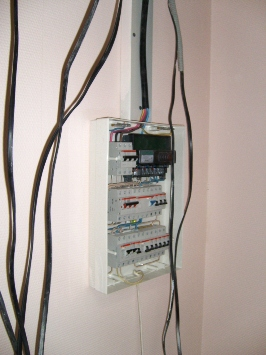

Качественный электромонтаж в Санкт-Петербурге и ленобласти, стаж 12 лет. Частный электрик, недорого и качественно.
Тел. 8 904 642 08 57 Николай.

Стоимость работ по электрике.
Цены ниже! Жду звонка!
Где найти хорошего электрика и сколько будут стоимость замены проводки?
Пожалуй, этими вопросами задаются все, кто находится в поисках квалифицированного электрика. Я, как профессиональный частный электрик, предлагаю Вам свои услуги по решению всех существующих электрических проблем. Вы делаете в доме капитальный ремонт и хотите полностью обновить электропроводку, или некоторые розетки вышли из строя и нуждаются в замене, в обоих случаях необходимо присутствие электрика, который поможет дельными советами и в кратчайшие сроки выполнит сопутствующие работы.
К сожалению, наш город переполнен мастерами – однодневками, пытающихся ухватить выгодный заказ. Их не волнует, как они будут выполнять работы, главное – стоимость. Отсутствие опыта и специальных инструментов, обычно они появляются с изолированной отверткой и стареньким пассатижи, приводит к почернению обои к перебойным работам электроприборов.
Стоимость электрики.
Вариант установки электропроводки. |
Цена за работу. |
Цена работ + электроматериалы. |
Электропроводка в однокомнатной квартиры. |
29000 |
36000 |
В двухкомнатной. |
35000 |
45000 |
В трёхкомнатной. |
41000 |
57000 |
В четырех комнатной. |
50 000 |
70000 |
Электропроводка в кухне. |
10000 |
14000 |
В ванную. |
5000 |
10000 |
В комнате. |
8000 |
13000 |
Как складывается и от чего зависит стоимость работ по электрике? – вопрос я слышу от потенциального заказчика. Хочу заверить, что определенную сумму на услуги, редко какой специалист назовет. Дело в том, что стоимость электро работ подразумевает перерасчет многих условий. Точную смету могут предложить лишь в крупных строительный организациях, которые держат в штате сметчика, ведущий полную отчетность. Но браться за такие незначительные заказы, как проводка в квартире они не будут, придется обратиться к частнику.
Как, в основном, частные электрики рассчитают стоимость работ:
- По точкам – высчитывается каждая точка, то есть, розетка, выключатели, светильники и подсоединяющие к ним провода. Отдельно могут высчитываться работы у электрощита, в распределительной коробке. Также отдельно складывается стоимость за подключение водонагревательных приборов, которые требует новой отдельной линии;
- По типу квартиры – стоимость электрических работ за проводку в однокомнатной квартире в хрущевке и в новостройке существенно отличается. В первом варианте речь идет о панельном доме, где трубы для кабельной разводки переполнены мусором и провести через них провода довольно сложно. Вообще, панельные дома очень нелюбимы электриками. Чтобы выштробить в стене место для подрозетника придется изрядно потрудиться тяжелой техникой, перфоратор и др., что существенно влияет на стоимость услуг электрика.
Мастер по электрике.

Я, исходя из многолетней практики, могу сказать, что ни один опытный электрик по телефону не сможет дать окончательного ответа на свои услуги, может быть названа приблизительная сумма. Необходимо пригласить электрика на объект, высказать ему свое предпочтения, электрик, в свою очередь, внимательно изучит особенности заказа, и только тогда можно рассчитать стоимость электромонтажных работ. Осмотр специалиста места работы позволит Вам, заказчикам, не только узнать цену вопроса, но и появляется уникальная возможность – проконсультироваться с мастером своего дела, конечно же, если это квалифицированный человек. К примеру, если я вижу, что заказчик не совсем разбирается в тонкостях электричества, я могу посоветовать ему предложить по-другому урегулировать спорные моменты.
Определяем опытного электрика.
За свою практику я не раз сталкивался с людьми, которые попадали в руки мошенников и некомпетентных электриков. Даже бывали ситуации, когда человек, которому доверили замену электропроводки в квартире, уже несколько лет работал электриком. Но хочу заверить, это вовсе не обозначает, что простой электрик может выполнить правильно весь тот объем работ, которая предусматривает полная замена электропроводки. Здесь необходимы теоретические знания, накопленный в этой сфере деятельности опыт и профессиональные инструменты, позволяющие эффективно выполнить работу. И прежде чем приглашать в себе мастера – электрика, в первую очередь Вас должно интересовать не стоимость электромонтажа, а опыт электрика.
Я призываю Вас доверить такое серьезное дело, как электричество, опытным рукам, умеющих правильно оформить все работы.
Хотите защититься от риска попасть лже мастерам, обратитесь ко мне и результатом Вы точно останетесь довольны.

Сколько будут стоить материалы.
Расценки на электропроводку.
Электромонтаж в доме.
Замена электропроводки в двухкомнатной квартире?.
Сколько стоит сделать внутреннюю проводку?.
Установка люстр и светильников.
Электромонтаж проводов в бане.